BI development and analytics · Durham, NC
These are 11 dashboards I designed for a contact center operation. They go from the intraday pages supervisors kept open all day up to the views managers used for weekly reviews and coaching. Click any of them to see it full size.
Everything shown is sample data. Client and employee names are made up and all values are altered, but the layouts and measures are my own design.
Each channel gets its own page. The top row has the main numbers for the day, and the visuals below break them out by queue and by hour so a supervisor can see where things started to slip.
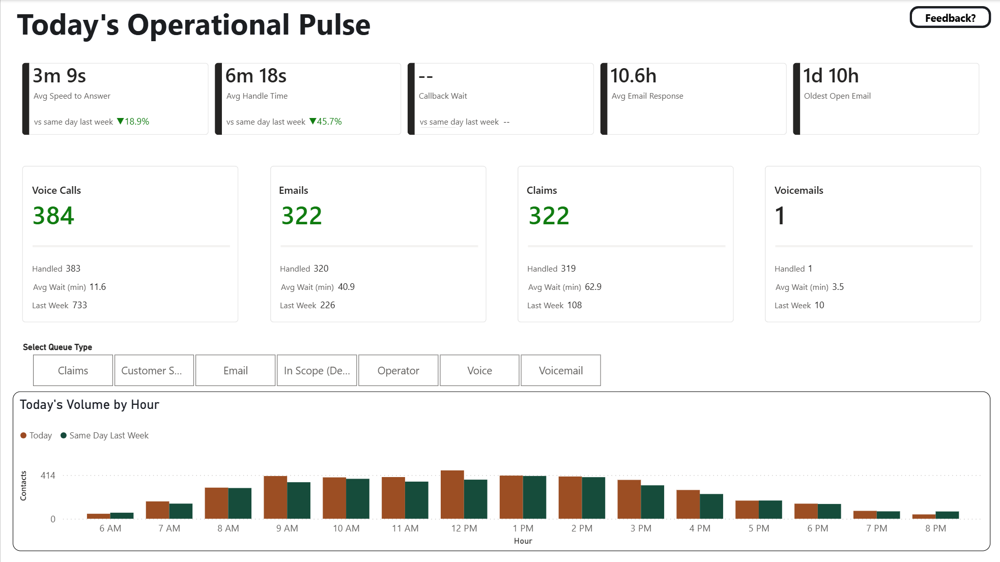
Live wait and handle times compared to the same day last week, a card for each queue, and volume by hour. The queue type buttons filter the whole page.
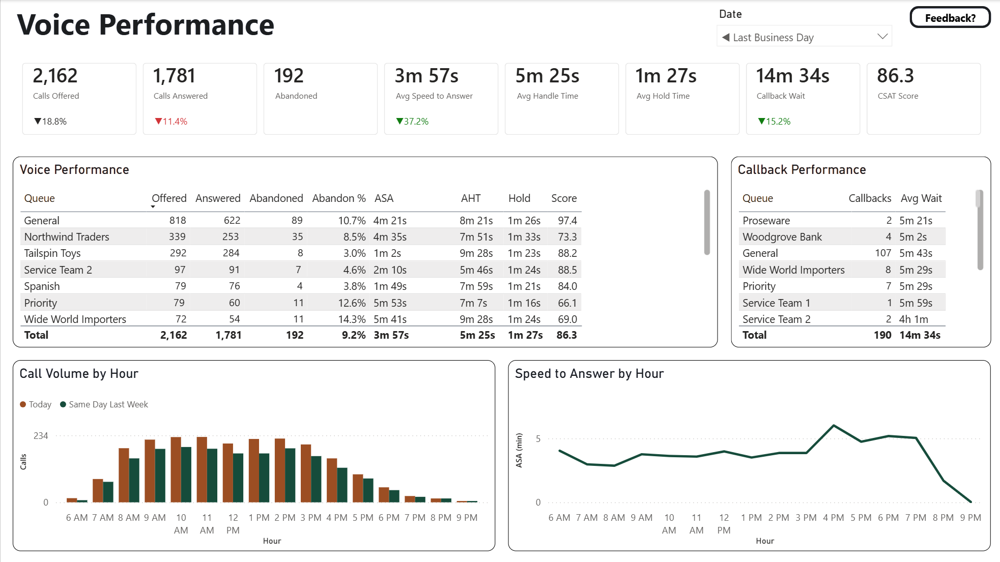
Calls offered, answered and abandoned by queue, plus callbacks and speed to answer by hour.
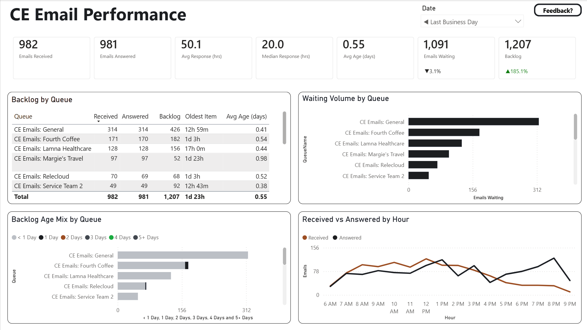
Email backlog by queue with the age of the oldest item, how old the backlog is, and emails received vs. answered by hour.
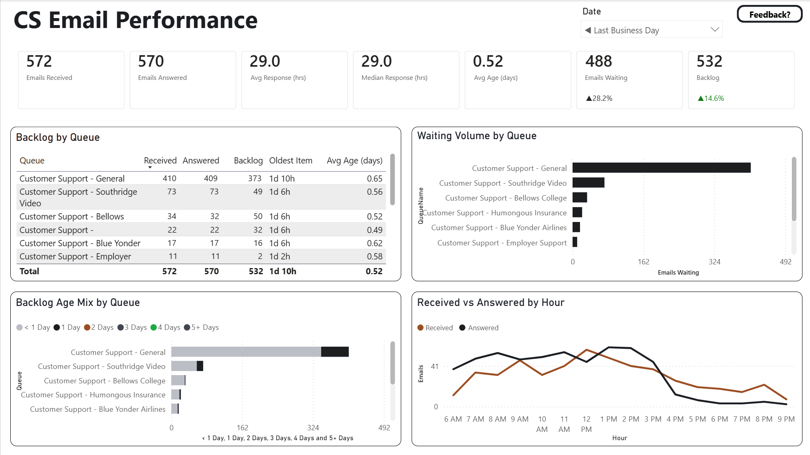
Same layout as the CE page but for the customer support queues, so both teams read their numbers the same way.
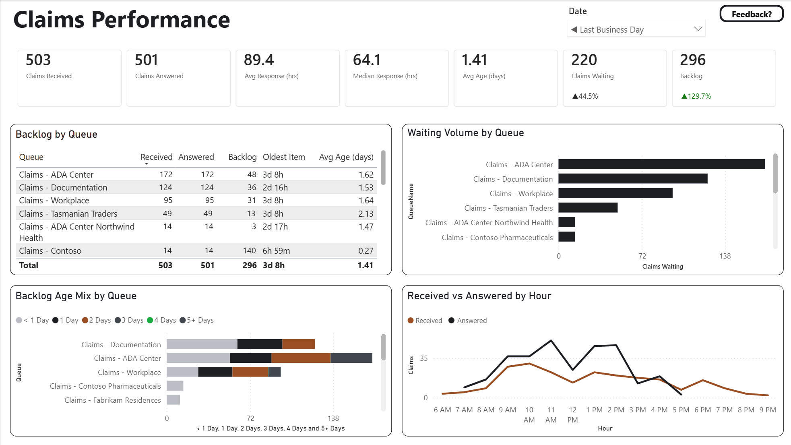
Claims queues with aging buckets from under a day to 5+ days, so it's clear which work is sitting too long.
Service tracked by client line. Red, yellow and green thresholds show which lines missed target without having to read every row.
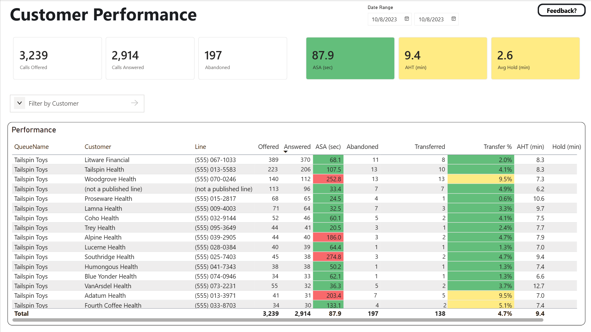
Every client line in one table with conditional formatting, a date range and a customer filter.
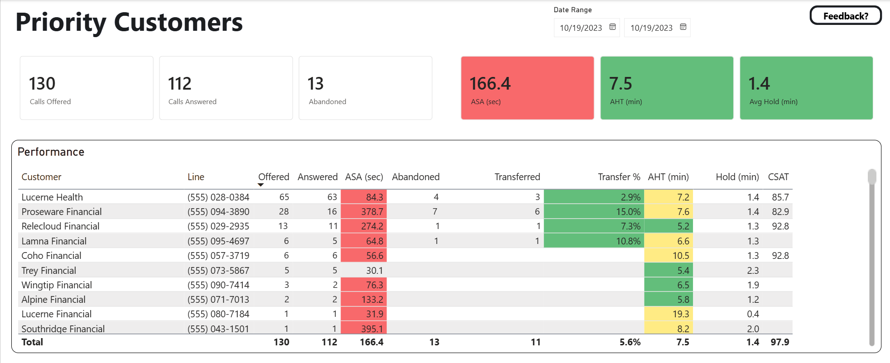
A smaller view for the highest priority accounts; the cards at the top turn red or green based on the same thresholds.
Pages for managers and team leads to see how each team is trending against target and which agents to coach first.
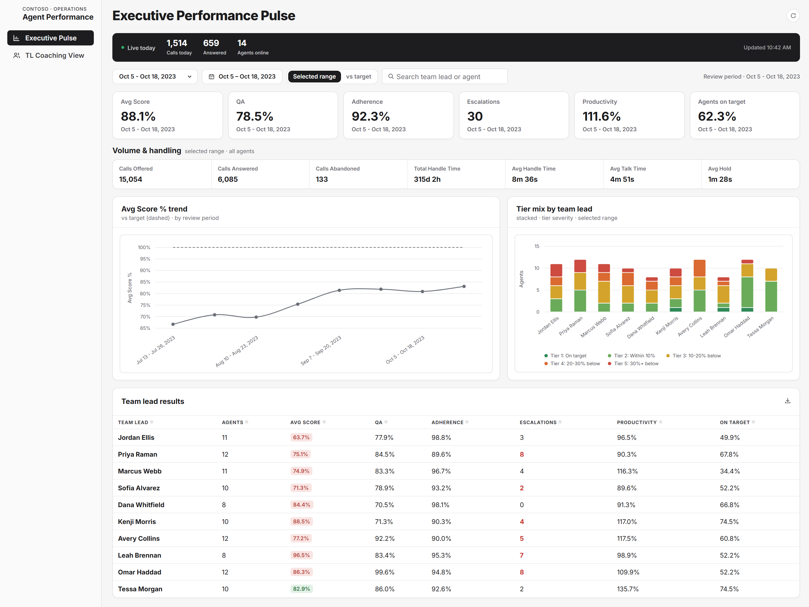
Average score against target by review period, the tier mix for each team lead, and a results table by team lead.
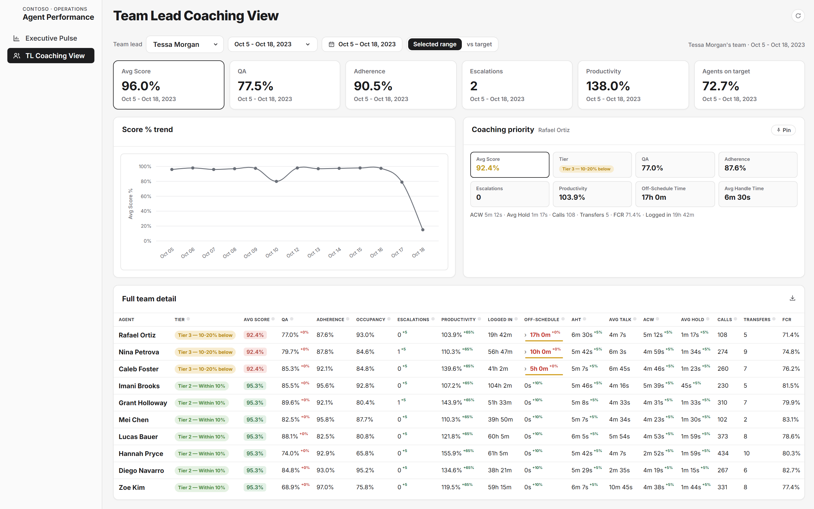
One team lead's daily score trend, the agent to coach first, and every agent's numbers against target.
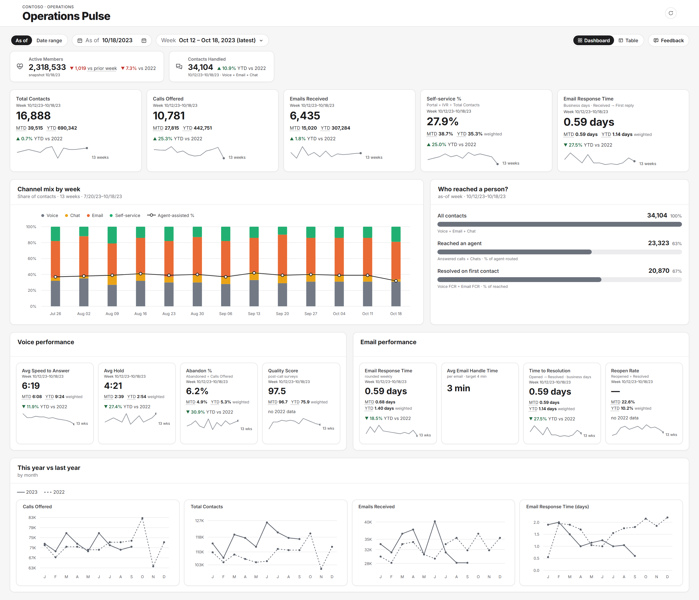
Weekly numbers with month to date, year to date and 13-week trend lines, channel mix by week, and this year vs. last year by month.
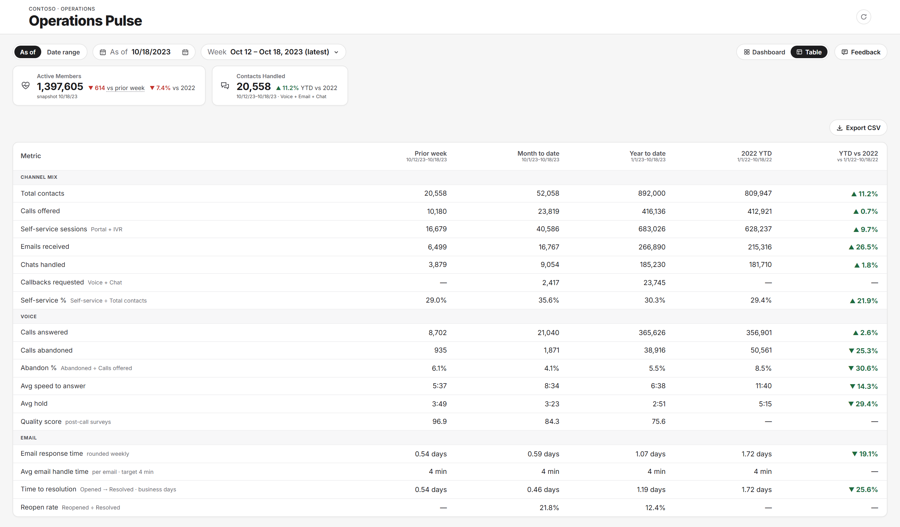
The same measures as a table by week, month and year with the prior year next to it. This is the view people exported to CSV.